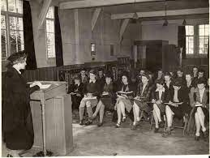
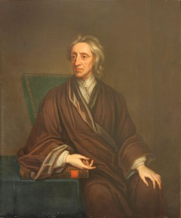
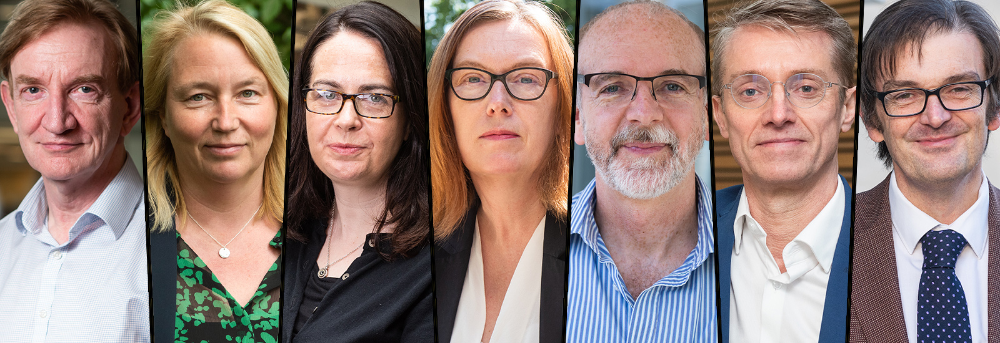

1096
Evidence of teachingThere is no clear date of foundation but teaching existed at Oxford in some form in 1096.
1167
A Paris banOxford developed rapidly from 1167, when Henry II banned English students from attending the University of Paris following a quarrel with Thomas Becket.
1188
A notable visitorIn 1188, the historian Gerald of Wales gave a public reading to the assembled Oxford dons (university lecturers, especially at Oxford or Cambridge). As a royal clerk to the king and two archbishops, Gerald of Wales travelled widely and wrote extensively.
1190
First overseas studentIn around 1190 the arrival of Emo of Friesland, the first known overseas student, set in motion the University’s tradition of developing international scholarly links.
1214
The title of ChancellorBy 1201 the University was headed by a ‘magister scholarum (head of an ecclesiastical school) Oxonie’, on whom the title of Chancellor was later conferred in 1214, and in 1231 the Masters were recognised as a universitas or corporation.
1249
First colleges
During the 13th century, rioting between town and gown (townspeople and students) hastened the establishment of primitive halls of residence. These were succeeded by the first of Oxford’s colleges, which began as endowed houses or medieval halls of residence, under the supervision of a Master. Established between 1249 and 1264, University, Balliol and Merton Colleges are the oldest. Merton College and chapel, 1775-1827 1355 header for History timeline, with date and image depicting Edward III Tributes from kings Less than a century later, Oxford had achieved eminence above every other seat of learning, and won the praises of popes, kings and sages by virtue of its antiquity, curriculum, doctrine and privileges. In 1355, Edward III paid tribute to the University for its invaluable contribution to learning. He also commented on the services rendered to the state by distinguished Oxford graduates. (Image credit: Shutterstock)
14th-17th centuries
Religious and political controversy Portrait of John Locke, oil on canvas John Locke (1632-1704) by Thomas Gibson. Image: Oxford University Images / Bodleian Library Early on, Oxford became a centre for lively controversy with scholars involved in religious and political disputes. John Wyclif, a 14th-century Master of Balliol, campaigned for a Bible in English, against the wishes of the papacy. In the 16th century, Henry VIII forced the University to accept his divorce from Catherine of Aragon, and the Anglican churchmen Cranmer, Latimer and Ridley were later tried for heresy and burnt at the stake in the city. The University was Royalist during the Civil War and Charles I held a counter-Parliament in the University’s Convocation House. In the late 17th century, the Oxford philosopher John Locke, suspected of treason, was forced to flee the country. 18th century header for History timeline, date and image depicting Edmond Halley, astronomer (1656-1742), by Thomas Murray Scientific discovery and religious revival Edmond Halley Edmond Halley, astronomer (1656-1742), by Thomas Murray. OUImages / Bodleian Library The 18th century became an era of scientific discovery and religious revival. Edmond Halley, Professor of Geometry, predicted the return of the comet that bears his name. John and Charles Wesley’s prayer meetings laid the foundations for the Methodist Society. Find out more: Oxford people Famous Oxonians British Prime Ministers | University of Oxford Award winners | University of Oxford
1860
A famous debateIn 1860 the new University Museum was the scene of a famous debate between Thomas Huxley, champion of evolution, and Bishop Wilberforce.
1920
Women become membersFrom 1878 academic halls were established for women, who were admitted as full members of the University from 1920. By 1986, all of Oxford’s male colleges had changed their statutes to admit women and, since 2008, all colleges have admitted men and women. The first women to be awarded degrees at Oxford University Major research capabilities During the 20th and early 21st centuries, Oxford established major new research capacities in the natural and applied sciences, including medicine. In so doing, it has enhanced and strengthened its traditional role as an international focus for learning and a forum for intellectual debate.
2020-22

A life-saving vaccine
Oxford University has been at the centre of the COVID-19 response from the very onset of the crisis, remaining at the forefront of global efforts to combat the disease and to mitigate its many effects, such as developing a vaccine and identifying treatments. By early 2022, more than 2.6 billion doses of the Oxford/AstraZeneca vaccine had been supplied to over 180 countries, with approximately two-thirds going to low and middle-income countries. The vaccine is estimated to have helped prevent 50 million COVID-19 cases, five million hospitalisations, and saved more than one million lives.